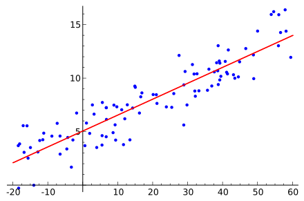

9. PyTorch 线性回归原文↗
线性回归是最基本的机器学习算法之一，用于预测一个连续值。它是一种简单且常见的回归分析方法，目的是通过拟合一个线性函数来预测输出。
对于一个简单的线性回归问题，模型可以表示为：

- y 是预测值（目标值）。
- \(x_1\)，\(x_2\)，\(x_n\) 是输入特征。
- \(w_1\)，\(w_2\)，\(w_n\) 是待学习的权重（模型参数）。
- b 是偏置项。

在 PyTorch 中，线性回归模型可以通过继承 nn.Module 类来实现。我们将通过一个简单的示例来详细说明如何使用 PyTorch 实现线性回归模型。
数据准备
我们首先准备一些假数据，用于训练我们的线性回归模型。这里，我们可以生成一个简单的线性关系的数据集，其中每个样本有两个特征 \(x_1\)，\(x_2\)。
实例
import torchimport numpy as np
import matplotlib.pyplot as plt
# 随机种子，确保每次运行结果一致
torch.manual_seed(42)
# 生成训练数据
X = torch.randn(100, 2) # 100 个样本，每个样本 2 个特征
true_w = torch.tensor([2.0, 3.0]) # 假设真实权重
true_b = 4.0 # 偏置项
Y = X @ true_w + true_b + torch.randn(100) * 0.1 # 加入一些噪声
# 打印部分数据
print(X[:5])
print(Y[:5])
输出结果如下：
tensor([[ 1.9269, 1.4873],
[ 0.9007, -2.1055],
[ 0.6784, -1.2345],
[-0.0431, -1.6047],
[-0.7521, 1.6487]])
tensor([12.4460, -0.4663, 1.7666, -0.9357, 7.4781])
这段代码创建了一个带有噪声的线性数据集。
- 输入 X 为 100x2 的矩阵，每个样本有两个特征。
- 输出 Y 由真实的权重和偏置生成，并加上了一些随机噪声。
- 使用
torch.manual_seed(42)确保每次运行结果一致，便于调试和复现。
定义线性回归模型
我们可以通过继承 nn.Module 来定义一个简单的线性回归模型。在 PyTorch 中，线性回归的核心是 nn.Linear() 层，它会自动处理权重和偏置的初始化。
实例
import torch.nn as nn# 定义线性回归模型
class LinearRegressionModel(nn.Module):
def __init__(self):
super(LinearRegressionModel, self).__init__()
# 定义一个线性层，输入为2个特征，输出为1个预测值
self.linear = nn.Linear(2, 1) # 输入维度2，输出维度1
def forward(self, x):
return self.linear(x) # 前向传播，返回预测结果
# 创建模型实例
model = LinearRegressionModel()
这里的 nn.Linear(2, 1) 表示一个线性层，它有 2 个输入特征和 1 个输出。forward 方法定义了如何通过这个层进行前向传播。
注意：
nn.Linear会自动创建权重矩阵和偏置向量，不需要手动定义。
定义损失函数与优化器
线性回归的常见损失函数是均方误差损失（MSELoss），用于衡量预测值与真实值之间的差异。PyTorch 中提供了现成的 MSELoss 函数。
我们将使用SGD（随机梯度下降）或Adam优化器来最小化损失函数。
实例
# 损失函数（均方误差）criterion = nn.MSELoss()
# 优化器（使用 SGD 或 Adam）
optimizer = torch.optim.SGD(model.parameters(), lr=0.01) # 学习率设置为0.01
# 也可以使用 Adam 优化器
# optimizer = torch.optim.Adam(model.parameters(), lr=0.01)
| 组件 | 说明 |
|---|---|
MSELoss |
计算预测值与真实值的均方误差，公式为 \(\frac{1}{n}\sum(y_{pred} - y_{true})^2\) |
SGD |
使用随机梯度下降法更新参数，学习率控制每步更新的幅度 |
Adam |
自适应学习率优化器，通常收敛更快 |
训练模型
在训练过程中，我们将执行以下步骤：
- 使用输入数据 X 进行前向传播，得到预测值。
- 计算损失（预测值与实际值之间的差异）。
- 使用反向传播计算梯度。
- 更新模型参数（权重和偏置）。
我们将训练模型 1000 轮，并在每 100 轮打印一次损失。
实例
# 训练模型num_epochs = 1000 # 训练 1000 轮
for epoch in range(num_epochs):
model.train() # 设置模型为训练模式
# 前向传播
predictions = model(X) # 模型输出预测值
loss = criterion(predictions.squeeze(), Y) # 计算损失（注意预测值需要压缩为1D）
# 反向传播
optimizer.zero_grad() # 清空之前的梯度
loss.backward() # 计算梯度
optimizer.step() # 更新模型参数
# 打印损失
if (epoch + 1) % 100 == 0:
print(f'Epoch [{epoch + 1}/1000], Loss: {loss.item():.4f}')
predictions.squeeze()：将模型的输出从 2D 张量压缩为 1D，因为目标值Y是一个一维数组。optimizer.zero_grad()：每次反向传播前需要清空之前的梯度，否则梯度会累积。loss.backward()：自动计算所有可训练参数的梯度。optimizer.step()：根据计算得到的梯度更新权重和偏置。
训练模式 vs 评估模式： 在训练循环中调用
model.train()是必要的，虽然本例中没有使用 Dropout 或 BatchNorm，但养成这个习惯对复杂模型很重要。
评估模型
训练完成后，我们可以通过查看模型的权重和偏置来评估模型的效果。我们还可以在新的数据上进行预测并与实际值进行比较。
实例
# 查看训练后的权重和偏置print(f'Predicted weight: {model.linear.weight.data.numpy()}')
print(f'Predicted bias: {model.linear.bias.data.numpy()}')
# 在新数据上做预测
with torch.no_grad(): # 评估时不需要计算梯度
predictions = model(X)
# 可视化预测与实际值
plt.scatter(X[:, 0], Y, color='blue', label='True values')
plt.scatter(X[:, 0], predictions, color='red', label='Predictions')
plt.legend()
plt.show()
model.linear.weight.data和model.linear.bias.data：这些属性存储了模型的权重和偏置。torch.no_grad()：在评估模式下，不需要计算梯度，可以节省内存并提高推理速度。
完整示例代码
下面是上述所有步骤的完整代码，整合在一起可以直接运行：
实例
import torchimport torch.nn as nn
import matplotlib.pyplot as plt
# 1. 准备数据
torch.manual_seed(42)
X = torch.randn(100, 2) # 100 个样本，2 个特征
true_w = torch.tensor([2.0, 3.0])
true_b = 4.0
Y = X @ true_w + true_b + torch.randn(100) * 0.1
# 2. 定义模型
class LinearRegressionModel(nn.Module):
def __init__(self):
super().__init__()
self.linear = nn.Linear(2, 1)
def forward(self, x):
return self.linear(x)
model = LinearRegressionModel()
# 3. 定义损失函数和优化器
criterion = nn.MSELoss()
optimizer = torch.optim.SGD(model.parameters(), lr=0.01)
# 4. 训练模型
num_epochs = 1000
for epoch in range(num_epochs):
model.train()
predictions = model(X)
loss = criterion(predictions.squeeze(), Y)
optimizer.zero_grad()
loss.backward()
optimizer.step()
if (epoch + 1) % 100 == 0:
print(f'Epoch [{epoch + 1}/{num_epochs}], Loss: {loss.item():.4f}')
# 5. 评估模型
print(f'\n训练后的权重: {model.linear.weight.data.numpy()}')
print(f'训练后的偏置: {model.linear.bias.data.numpy()}')
print(f'真实权重: {true_w.numpy()}')
print(f'真实偏置: {true_b}')
运行结果解析
运行上述代码后，你将看到类似以下的输出：
Epoch [100/1000], Loss: 0.0654 Epoch [200/1000], Loss: 0.0398 Epoch [300/1000], Loss: 0.0243 Epoch [400/1000], Loss: 0.0148 Epoch [500/1000], Loss: 0.0090 Epoch [600/1000], Loss: 0.0055 Epoch [700/1000], Loss: 0.0033 Epoch [800/1000], Loss: 0.0020 Epoch [900/1000], Loss: 0.0012 Epoch [1000/1000], Loss: 0.0008 训练后的权重: [[2.0016 2.9973]] 训练后的偏置: [4.0015] 真实权重: [2. 3.] 真实偏置: 4.0
可以看到，随着训练轮数的增加，损失值不断下降，最终模型的权重和偏置非常接近真实值，说明模型成功学习到了数据的线性关系。
扩展：使用更复杂的优化器
除了 SGD，PyTorch 还提供了许多其他优化器，下面是使用 Adam 优化器的示例：
实例
# 使用 Adam 优化器（通常收敛更快）optimizer = torch.optim.Adam(model.parameters(), lr=0.01)
# 训练模型
for epoch in range(num_epochs):
model.train()
predictions = model(X)
loss = criterion(predictions.squeeze(), Y)
optimizer.zero_grad()
loss.backward()
optimizer.step()
if (epoch + 1) % 100 == 0:
print(f'Epoch [{epoch + 1}/{num_epochs}], Loss: {loss.item():.4f}')
| 优化器 | 特点 | 适用场景 |
|---|---|---|
| SGD | 简单直接，需要手动调节学习率 | 大数据集，经典场景 |
| Adam | 自适应学习率，收敛快 | 大多数场景，推荐默认选择 |
| RMSprop | 适合递归神经网络 | RNN、LSTM 等序列模型 |
常见问题
问题一：损失值不下降
如果训练过程中损失值不下降，可能的原因包括：
- 学习率过小，导致参数更新幅度太小。
- 学习率过大，导致跳过最优解。
- 数据存在问题，如特征值范围差异过大。
解决方案：
- 尝试调整学习率（从 0.1、0.01、0.001 开始尝试）。
- 对输入数据进行标准化处理。
- 检查数据中是否存在异常值或缺失值。
问题二：预测值形状不匹配
如果在计算损失时出现形状不匹配的错误，可能需要使用 squeeze() 或 unsqueeze() 调整张量形状。
实例
# 检查输出形状predictions = model(X)
print(f'模型输出形状: {predictions.shape}') # 应该是 [100, 1]
# 压缩为 1D
predictions = predictions.squeeze()
print(f'压缩后形状: {predictions.shape}') # 应该是 [100]
# 计算损失
loss = criterion(predictions, Y)
问题三：如何提高模型精度
- 增加训练轮数。
- 调整学习率。
- 使用更复杂的模型结构（如多层神经网络）。
- 增加训练数据量。